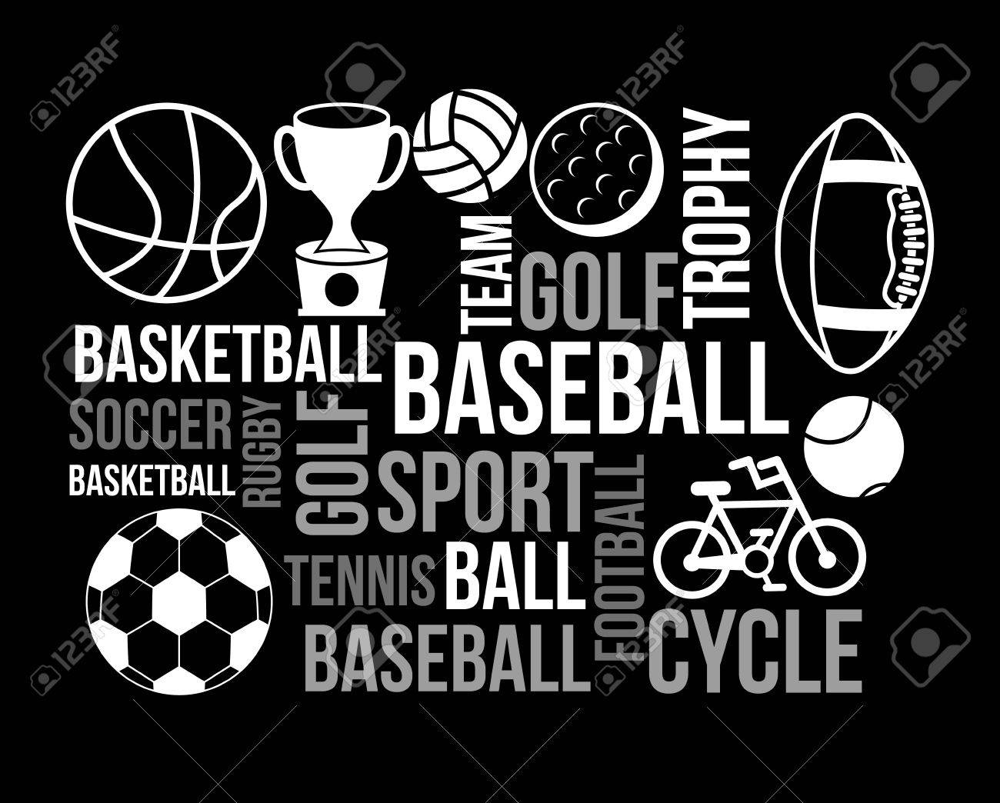
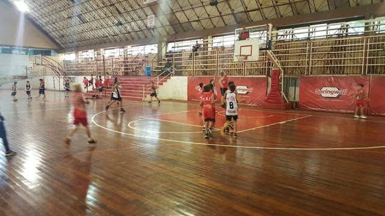
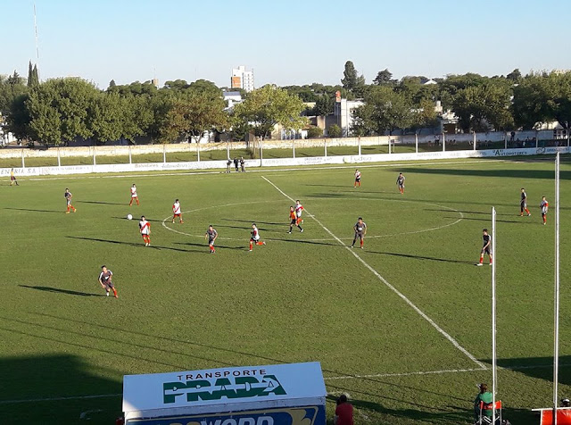
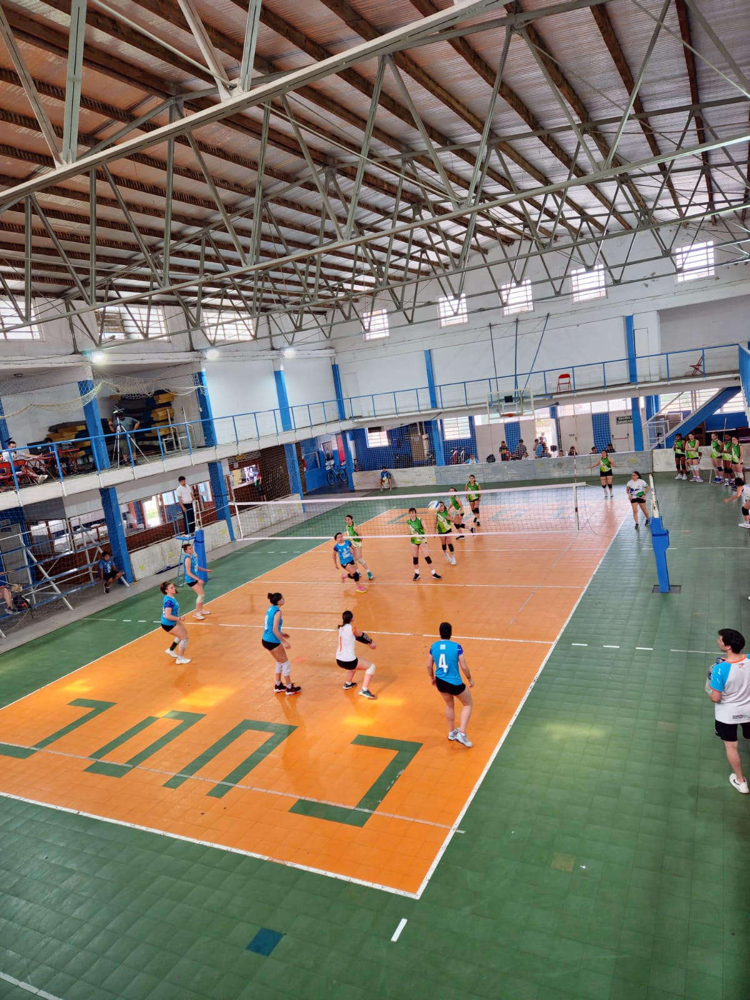
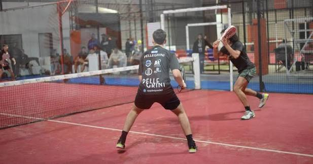
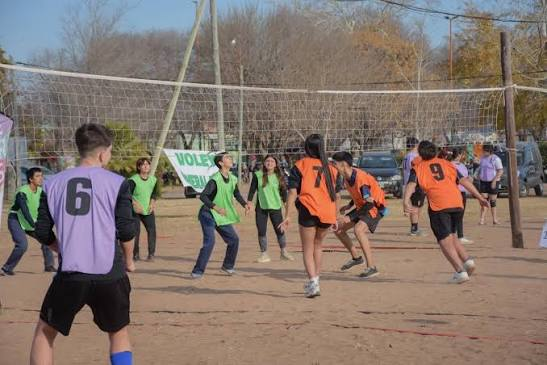
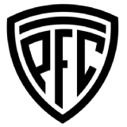
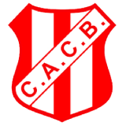
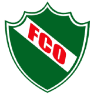
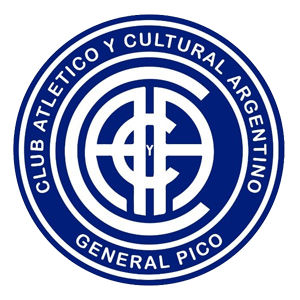

Deportes
En la ciudad de General Pico se desarrollan una gran variedad de disciplinas deportivas tanto de carácter competitivo como social y recreativo.
Fútbol
Básquetbol
Voleibol y Newcom
Hockey sobre césped
Rugby





Fútbol
Uno de los deportes más convocantes de la ciudad de General Pico es el Futbol. Las Tablas de posiciones de los clubes de la ciudad en la región son:
Primera División
| Pos | Club | Pt | Pj | Pg | Pe | Pp | Df |
|---|---|---|---|---|---|---|---|
| 2 | Club Spotivo Independiente |
23 | 11 | 7 | 2 | 2 | 10 |
| 7 |  Pico Futbol Club |
11 | 14 | 4 | 2 | 5 | -4 |
| 9 |  Club Atlético Costa Brava |
11 | 11 | 3 | 2 | 6 | -1 |
| 11 |  Ferro Carril Oeste |
11 | 11 | 2 | 5 | 5 | -6 |
Segunda División
| Pos | Club | Pt | Pj | Pg | Pe | Pp | Df |
|---|---|---|---|---|---|---|---|
| 1 |  Club Atlético y Cultural Argentino |
12 | 5 | 4 | 0 | 1 | 6 |
Para más información acerca de la liga pampeana de futbol puede visitar la siguiente página. Liga Pampeana